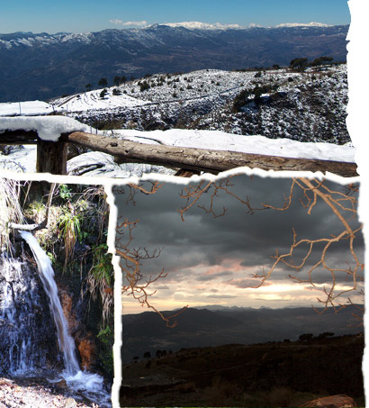

castellano


Un entorno que invita al relax y a la contemplación de la naturaleza, dominando una espléndida panorámica desde el Valle de Lecrín y la Sierra de Lanjarón hasta el mar que baña la Costa Tropical.
El Cortijo "La Encina" se encuentra a 8 Km. del casco urbano de Lanjarón, en la montaña, en la vertiente Sur de Sierra Nevada a 1.400 m de altitud sobre el nivel del mar, en la comarca de Las Alpujarras.
La casa tiene un entorno muy agradable, soleado y tranquilo, ideal para practicar distintas actividades en la naturaleza, bañarte en la piscina o disfrutar del jardín y del espacio exterior entre huertas y vegetación de montaña.
Desde el Cortijo se divisan panorámicas al mar y a la alta montaña. Es una casa tranquila y decorada en estilo rústico con todos los detalles, para que tengas una estancia inolvidable.
Cortijo La Encina | Camino Tello/Terrón 18420 Lanjarón (GRANADA) | Tel 958 12 93 30 | Mov 654 123090 |
© Ingrid Dominguez Bravo | diseño por Lali Ventura | web por deide | estudio de diseño | Cumple los estándares XHTML 1.0 + CSS 2.1 | SiteMap